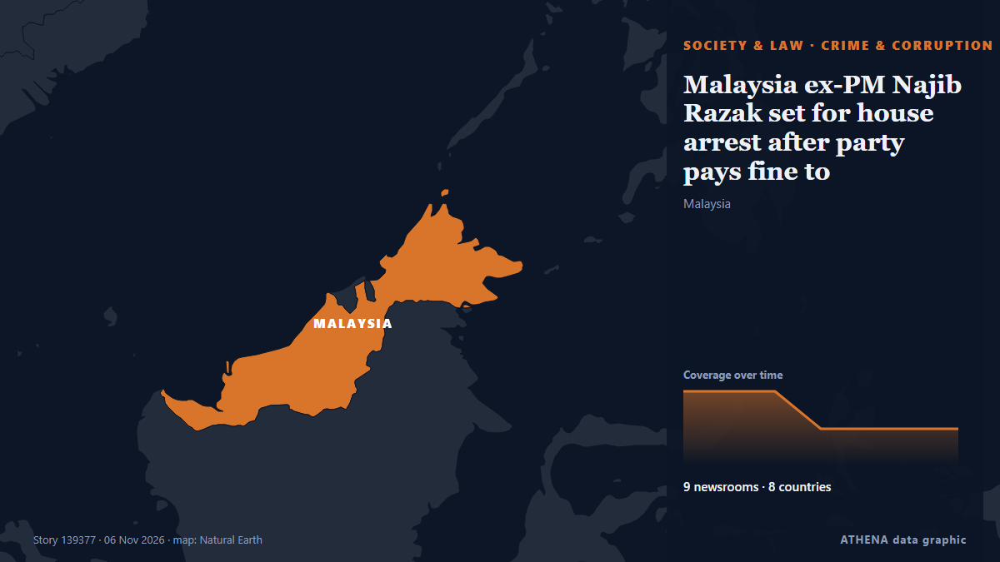

Εγκλήματα & διαφθορά
ΧορηγούμενοΠαρουσιάζεται από  Cybernetics and Artificial Intelligence Lab Welcome to the Cybernetics and Artificial Intelligence Laboratory, established at the Department of Business Administration of the National and Kapodistrian University of Athens. The lab is headed by Professor Dimitrios Thomakos. The lab aims to do research that can be published in top venues. Our research uses tools and methods of Artificial Intelligence, and lies in the following areas: - Forecasting - Decision making - Cyber security - Finance We are always looking forward to collaborating with exceptional students!
Cybernetics and Artificial Intelligence Lab Welcome to the Cybernetics and Artificial Intelligence Laboratory, established at the Department of Business Administration of the National and Kapodistrian University of Athens. The lab is headed by Professor Dimitrios Thomakos. The lab aims to do research that can be published in top venues. Our research uses tools and methods of Artificial Intelligence, and lies in the following areas: - Forecasting - Decision making - Cyber security - Finance We are always looking forward to collaborating with exceptional students!
| 24 Οκτ | 1 |
|---|---|
| 25 Οκτ | 0 |
| 26 Οκτ | 0 |
| 27 Οκτ | 0 |
| 28 Οκτ | 0 |
| 29 Οκτ | 0 |
| 30 Οκτ | 0 |
| 31 Οκτ | 0 |
| 1 Νοε | 1 |
| 2 Νοε | 6 |
| 3 Νοε | 3 |
| 4 Νοε | 8 |
| 5 Νοε | 4 |
| 6 Νοε | 1 |
Οι τίτλοι των ειδήσεων παρουσιάζονται στα αγγλικά, όπως δημοσιεύτηκαν.

Malaysia ex-PM Najib Razak set for house arrest after party pays fine to
A Malaysian court has issued an order allowing the transfer to house arrest of jailed former Prime Minister Najib Razak, his lawyer said on Friday, after his party announced it had paid a fine under… από Daily Maverick
Five suspects in Carthage case notified of charges, including senior SBU and National Police officials
Detectives from the National Anti-Corruption Bureau of Ukraine (NABU) have notified five alleged members of a criminal organization of suspicion. από Ukrinform (English)
The Leader of a German Conservative Party Is Found Dead at a Berlin Hotel
Hubert Aiwanger, leader of a conservative party influential in Bavarian politics, has been found dead in a Berlin hotel. από ABC News (International)
26 arrested in major Cyprus police operation targeting organised crime networks
Twenty-six individuals have been taken into custody in a major nationwide police operation aimed at suspected drug trafficking networks, authorities reported on Thursday. από Cyprus Mail
Ukraine dismisses 2 senior security officials amid probe into criminal network
Anti-corruption agencies allege law enforcement officials protected fraudulent call centers, drug trafficking and counterfeiting operations. από Anadolu Agency (English)
Lebanon issues arrest warrants for 2 Hezbollah members in explosives truck case
Case centers on truck carrying hundreds of kilos of explosives seized while traveling from Bekaa region toward Beirut. από Anadolu Agency (English)
Thursday, 5 November 2026
Armenia * The founder and leader of the opposition Strong Armenia party, Russian–Armenian billionaire Samvel Karapetyan, has been placed in pre-trial detention for one month. από OC Media
KZN police record 18 election-related cases since start of voting
Acting Provincial Police Commissioner Phumelele Makoba says seven suspects have been arrested so far. από SABC News
Police warn politicians against destroying campaign materials
…IGP orders commissioners to arrest, prosecute offenders By Kingsley Omonobi The Nigeria Police Force has warned politicians, political thugs and other individuals against the destruction or… από Vanguard
Secret police files released in Hungary, 37 years after fall of communism
Critics say the move comes too late, that the files themselves are incomplete, and the move risks sowing division and causing unnecessary anguish. από BBC News
Suspect found guilty of supplying drugs to man who drowned in pond
Eight years after the event, Diogo J. was charged with supplying the victim with drugs and stealing his mobile phone, but was acquitted of failing to assist him. από Luxembourg Times
Uganda arrests former army deputy chief stripped of military rank
Uganda has arrested former deputy military chief and presidential adviser Peter Elwelu over allegations of involvement in activities aimed at destabilising the country. από Capital FM
Indonesia’s president sacks chief of staff over alleged wiretapping
Listyo Sigit Prabowo was dismissed a day after his arrest alongside two senior police officers on suspicion of illegally tapping the phones of the president and other officials. από Free Malaysia Today
Investigation after pins found in Halloween sweets
Gardaí are investigating a report that small metal pins were found in sweets collected by children during trick-or-treating in the Ballybofey and Stranorlar areas in Co Donegal. από RTÉ News
Democrats’ win puts US mining agenda under scrutiny
Democrats’ capture of Congress raises the prospect of greater scrutiny of President Donald Trump’s mining and energy agenda, even as pressure to. από MINING.COM
Indonesia arrests three for tapping president's phone: police
Prabowo, who took office in 2024, has come under increasing pressure for his government's handling of the economy and destructive wildfires in the Southeast Asian archipelago. από Channels TV
One Nation volunteer allegedly assaulted with baseball bat
A 60-year-old man was taken to hospital following the alleged attack south-west of Melbourne. από SBS News
S'porean, 29, who ran over & killed cyclist who stole backpack in Australia, jailed 5 years & 9 months
He accelerated believing that the car's transmission was in reverse, and ran him over. από Mothership
Boy, 14, hands himself in to police after Bradley Lowery used in sickening taunt in Coventry vs Sunderland
Bradley Lowery died aged six from neuroblastoma. από Manchester Evening News